One of my favorite projects working on Fund Subscription is conceptualizing and designing a revamped data table for fund managers. This table empowers them to track and oversee their investors' progress and data all in one place. To provide a more tailored and personalized experience, my team and I integrated the option to configure the data table with custom columns. This offers greater flexibility and versatility to fund operation teams as they manage investor data.
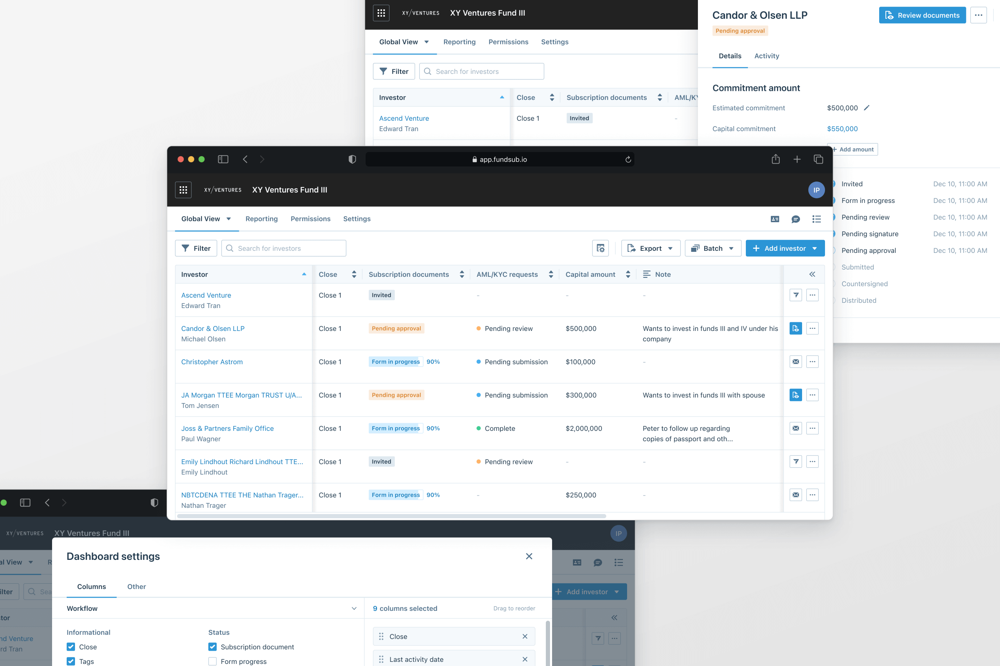
What got us started on this project
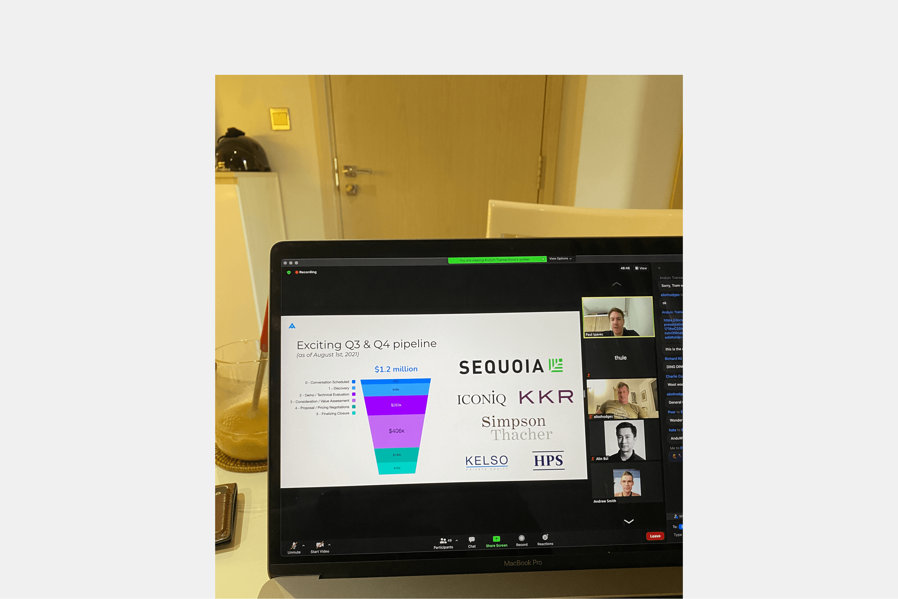
A few logos from our Q3 and Q4 customer pipeline in 2021 shown in our company all-hands — our most exciting one yet.
In the summer of 2021, we entered a partnership with a reputable New York law firm that specializes in private equity funds among other matters. They were interested in adopting Fund Subscription for their fundraising needs and to use our solution for all their customers as well.
During initial discovery calls with the law firm and also ongoing discussions with other firms and existing customers, we realized that:
Our old dashboard at the time was sufficient for our primary customer base of small and emerging funds in the past. However, as we wanted to expand our offerings to larger private equity and hedge funds, we encountered clients with dedicated operations teams for fundraising and post-close operations.
Each firm has its own specific internal practices that they want to replicate in the system they use, in this case, Fund Subscription. Some firms may prioritize certain data points that others do not, which highlights the need for a more tailored approach to better cater to the specific needs of our customers.
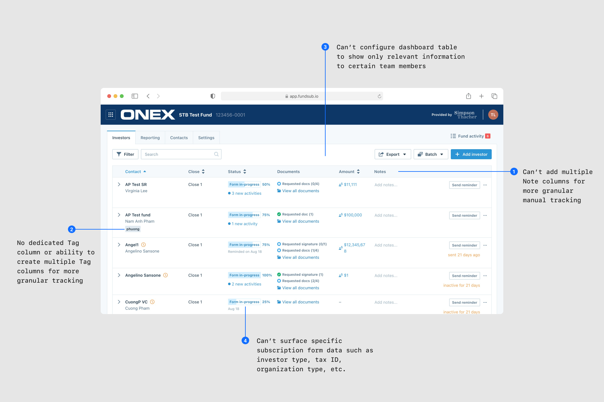
Limitations of our old standard dashboard.
Applying a one-size-fits-all approach was impossible, and our simple dashboard couldn't scale to serve more customers and use cases. As a result, we needed to introduce flexibility and configuration options.
How might we build a modular and scalable dashboard table to track various data points with customizable configuration?
As we collected information and established our execution strategy, our CTO, Binh, proposed implementing a more efficient backend for data storage and management system. To achieve this, Binh and Tuan-Anh, the lead engineer on this project, devised a plan to create a new infrastructure called the "data lake," which would supersede the outdated method used for storing data in the old dashboard.
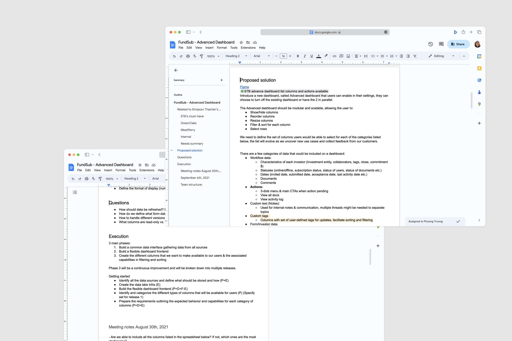
Additionally, I partnered with product to identify and categorize various column types that would be accessible to our users. We defined how these columns behave and what the user experience looks like. Finally, we would utilize the Tabulator library as the foundation for building the frontend, with lots of customization needed for our own components. Our lead engineer, Phuoc, is a wizard when it comes to frontend and never shies away from any challenges.
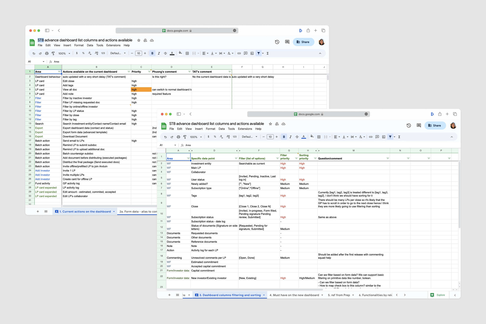
As the product designer on this initiative, I owned the design execution of the entire project, including:
Planning and conducting user research, competitor analysis, and broader problem space research for additional user insights
Reviewing and validating solutions with stakeholders and users
Translating concepts into prototypes and mockups ready for development
Defining and detailing user interactions and design logic
Collaborating closely with our engineers and QA during development and testing stages
CRMs as the mental model of fund managers and lawyers
Our customers, who are fund managers and lawyers, recognize the significance of managing and nurturing investor relationships, using CRMs like Salesforce, Affinity, and DealCloud to track interactions, notes, and other relevant information. By doing so, they can deliver better client service and drive business success. This aligns with our vision for Fund Subscription as a centralized system that fosters communication and collaboration, streamlines workflows, and offers insights into customer behavior. To provide a smooth user experience, I wanted to leverage the familiarity our customers have with these platforms.
Keeping tabs on competitors
To stay competitive, it's important to conduct competitor research to gain valuable insights into what works well and what can be improved upon, as well as identify gaps in the market and opportunities for innovation. Competitors like InvestNext, Allvue, and FIS Sungard offer similar capabilities to Fund Subscription but may have clunky and difficult-to-navigate product designs. At Anduin, my team and I strive to provide technological advancements while also ensuring a pleasant and smooth user experience for fund managers, differentiating ourselves in the private market space.
Understanding examples from other verticals and parallels
I've found that considering parallels and verticals is a valuable approach when conceptualizing new capabilities in B2B SaaS. It offers cross-industry insights to identify unique solutions, inspires innovation by examining how other industries tackle similar issues and allows for a better understanding of user needs and expectations resulting in the creation of more user-centered design solutions that meet the needs of the target audience.
My past experience working in product marketing allowed me to get a chance to use tools such as Facebook Ads Manager, Google Ad Manager, and HubSpot, so I looked at them to identify commonalities in managing campaigns that could relate to how fund managers and law firms use software to manage their funds and investor data.
One commonality is the ability to easily organize and manage campaigns or funds based on various attributes or performance metrics. They also offer tailored views and reports for specific user needs.
Another commonality is the use of intuitive interfaces with clear navigation and visualizations that allow users to quickly gain insights into campaign or fund performance.
Introducing the advanced dashboard table with flexible configuration
Within a couple of months, we completed research, design, and development and launched the MVP 🚀
Customers were able to experience and compare the advanced dashboard with the old dashboard. Immediately, we started making continuous improvements based on user feedback and insights. More and more customers began requesting this feature as soon as they heard about the new capability from our GTM team.
Design explorations
A few snippets of what my Figma file contains during design exploration and how I typically structure user flows.
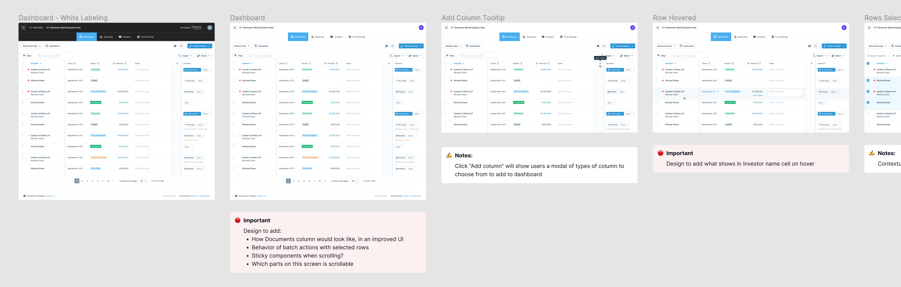
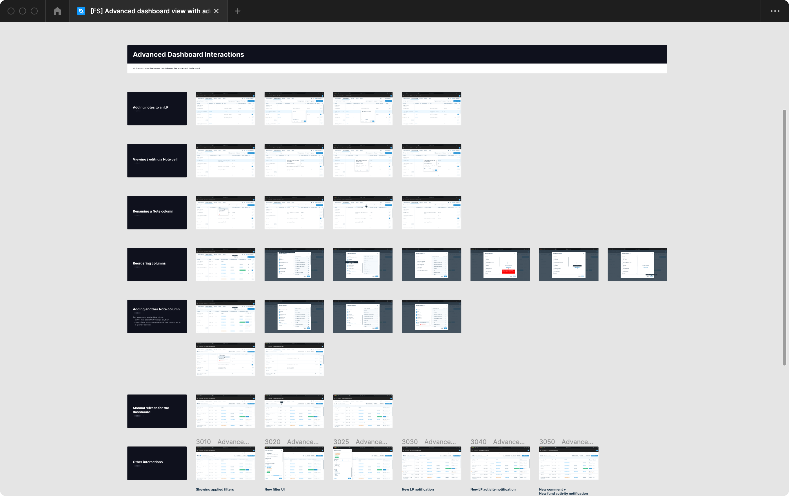
Dashboard table settings
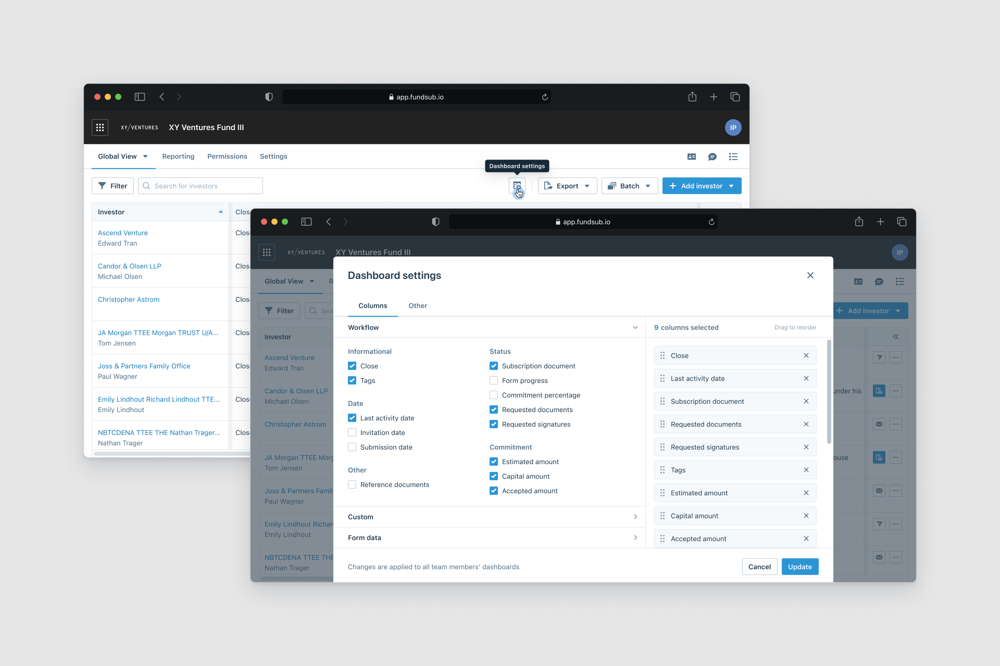
Adding multiple custom columns
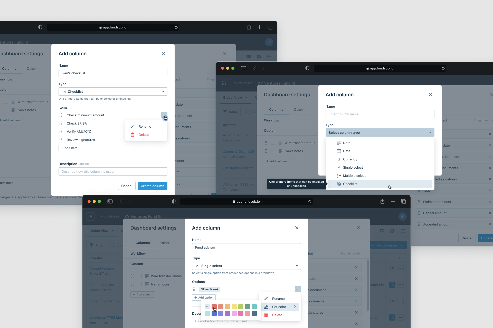
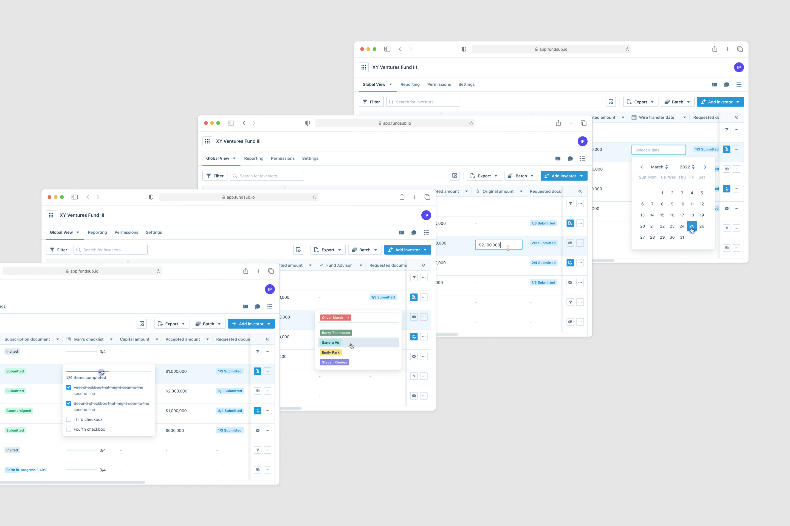
Quickly view an investor’s subscription information and take actions
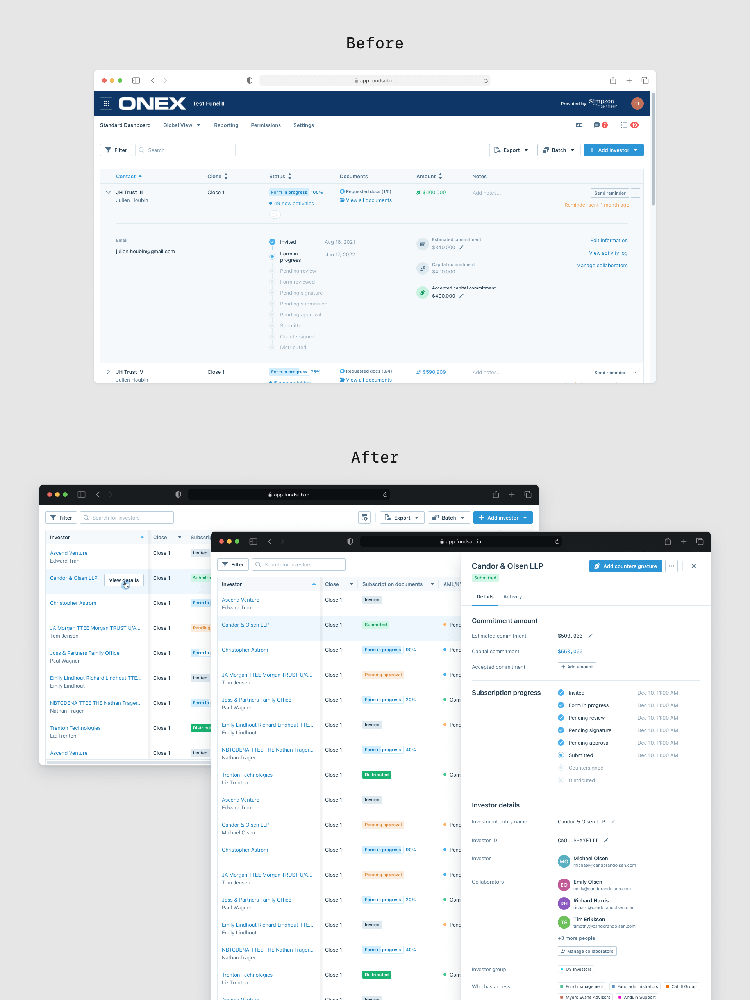
Surfacing investor subscription form data directly on the table
We've also introduced the capability that allows fund managers to select which subscription form data they want to see directly on the dashboard table via a form data column. Instead of having to navigate to each investor's form, this provides a more efficient way to access and compare important information. The column setup process for this feature would have to be done through our internal admin portal per the customer's request as it requires additional egineering effort.
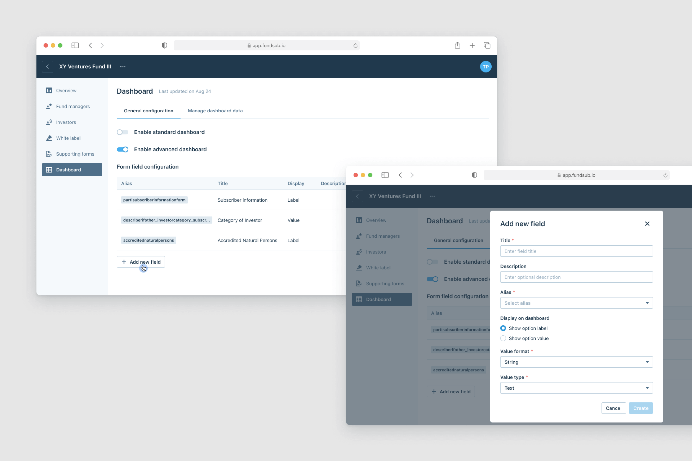
Results and impact
At the end of 2022, 66% of both long-standing and new customers were using both the old and advanced dashboard tables following the feature release. After implementing further enhancements to the advanced dashboard table, all our new customers requested to use this option exclusively for managing their funds.
Most importantly, this marked a major milestone for our partnership with the law firm and expands our footprint in the private market space. We are now their go-to partner for fundraising and other private equity transactions, as well as a solution for their customers.
What I've learned
Good data tables enable users to scan, analyze, compare, filter, sort, and manipulate information in order to derive insights and take action.
Good user interface design is rooted in human goals and behavior. The user interface, in turn, affects behavior, which drives further design decisions. User experience subtly and unconsciously alters how humans make decisions. The location and presentation of information, as well as how interactions are facilitated, all influence actions.
I've also gotten more comfortable working with complex objects. Complexity doesn't always mean something bad and it isn’t always equivalent to something that is complicated and confusing.
Special shoutouts to my team
🎮 One of our Friday Fibbage sessions during the three-month long shelter-in-place lockdown in Saigon 2021.
I want to express my gratitude to my teammates, who did some of their best work and helped keep each other sane as we all built this project from our homes during the three-month pandemic lockdown in Saigon 🙏
There were a couple of things that we didn't tackle in the first phase due to our limited resource at the time, they have been shipped after the MVP or are currently in the works:
Filtering investors by custom column values — This helps fund admins track subscriptions and investors' progress more efficiently.
Batch selection of subscriptions and improved batch actions — This update introduces a more intuitive batch selection experience for fund managers, and streamlines simple batch actions such as tagging, sending emails, and applying custom column values.
Permission control for fund operation teams — Also big project on its own, which was owned and launched by my other teammates in August 2022. We introduced a permission system for fund managers to create multiple fund teams, or groups, and grant different levels of access to investor data or fund details. This also enables them to create multiple dashboard table views with different configurations depending on the needs of different operation teams.